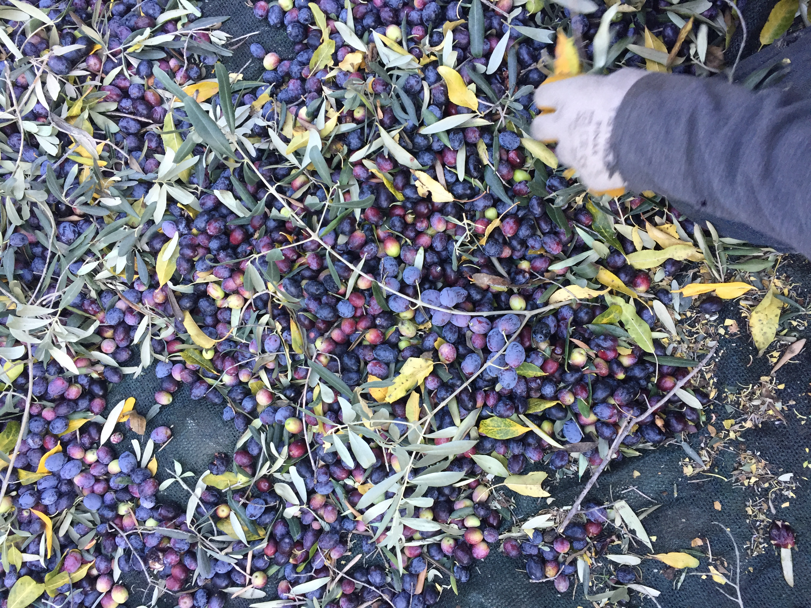
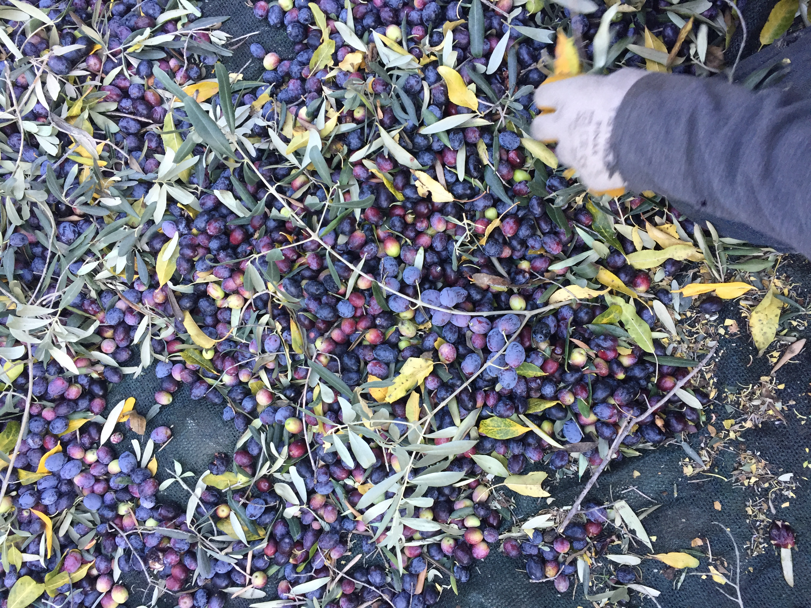

About Cadianda
A journey from ancient traditions to artisanal olive oil
A journey from ancient traditions to artisanal olive oil
We are individual producers with deep ties to this ancient land. While we haven't yet grown into a corporate structure, that dream remains on our horizon.
The miracle of nature—soil, sun, air—has blessed our journey from the very beginning. Right here, in the ancient lands of the Lycians, our ancestors traveled from Central Asia, following goats on horseback with loads carried by camels until they reached these shores.
Though the coastline was nearby, they chose the mountains for their coolness. The goats loved the mountains, and though a nomad once taught a goat to swim to the islands (as I once saw documented), our ways remained tied to the highlands.
"While we couldn't establish a civilization as advanced as the Lycians, we gradually transitioned from tent-dwelling to a settled life. When wheat farming became less profitable, we began planting olive trees, bringing us to where we are today."
 

In the old days, a single bottle of oil would last an entire summer. Why? Because people had goats that provided yogurt, cheese, and butter—with these staples, a bottle of oil was plenty.
Now, as a new generation of nomadic descendants, we're bridging traditional and modern approaches—growing olives as organically as possible and processing them with modern methods to bring them to you.
The costs are high and market prices are low, so we ask for your support. We strive to take freshly harvested olives to the factory immediately, though sometimes they might wait until the second day.
Daily oil extraction is important because olives begin to "heat up" when they wait, increasing their acidity. We harvest daily to ensure the freshest oil possible.
At the factory, the olive paste is brought to around 40 degrees Celsius (body temperature) before separating the oil, preserving its natural qualities and nutritional value.
So many factors affect olive oil quality—it's incredibly sensitive. We work diligently to bring this oil to you with the utmost care, using knowledge passed down through generations.
Our aim is to let you taste what we ourselves eat—but even better. Goat cheese, eggs, grape molasses, pomegranate syrup—all are our own productions.
If you wish, come visit our village. You're always welcome as our guest.
Contact Us to Visit